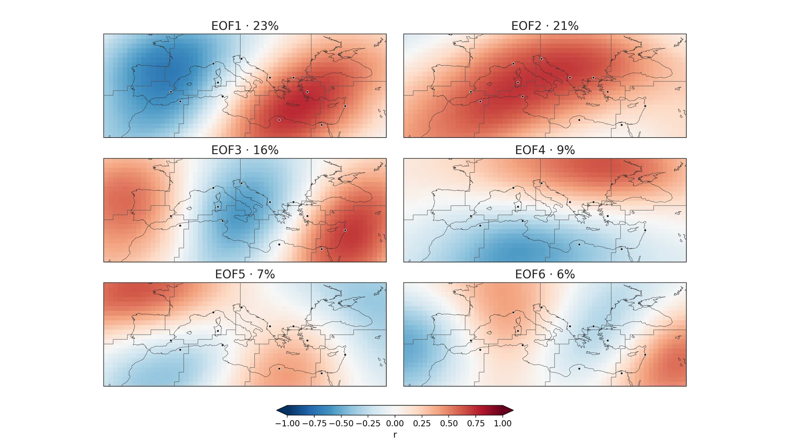
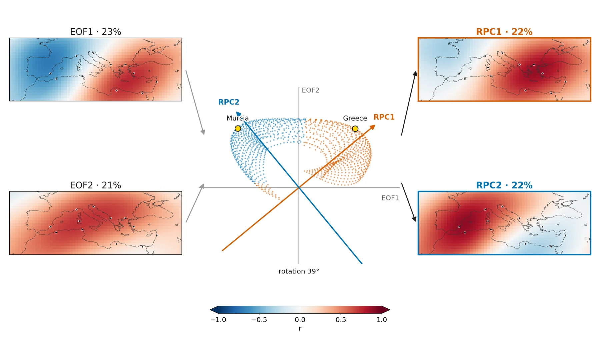
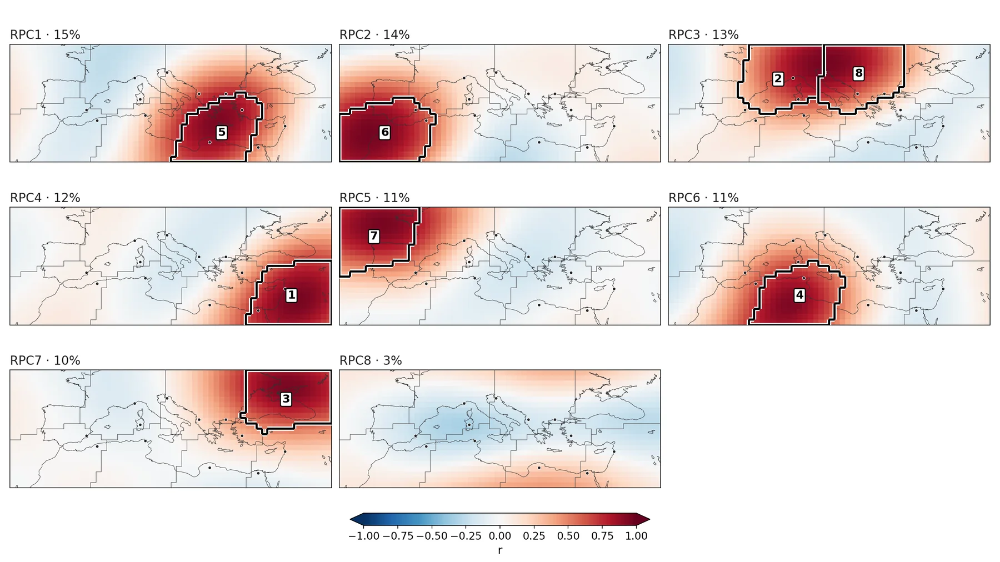
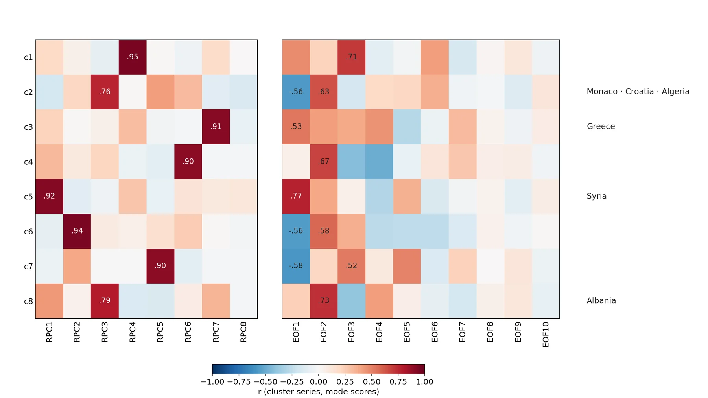
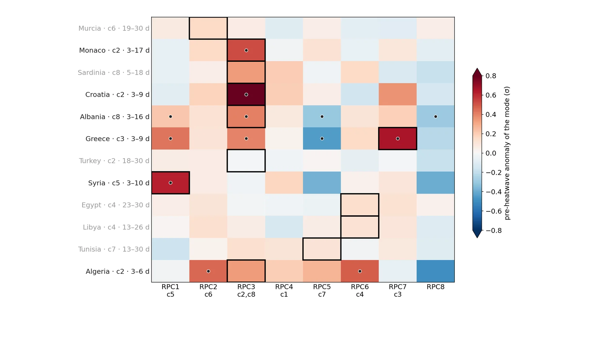
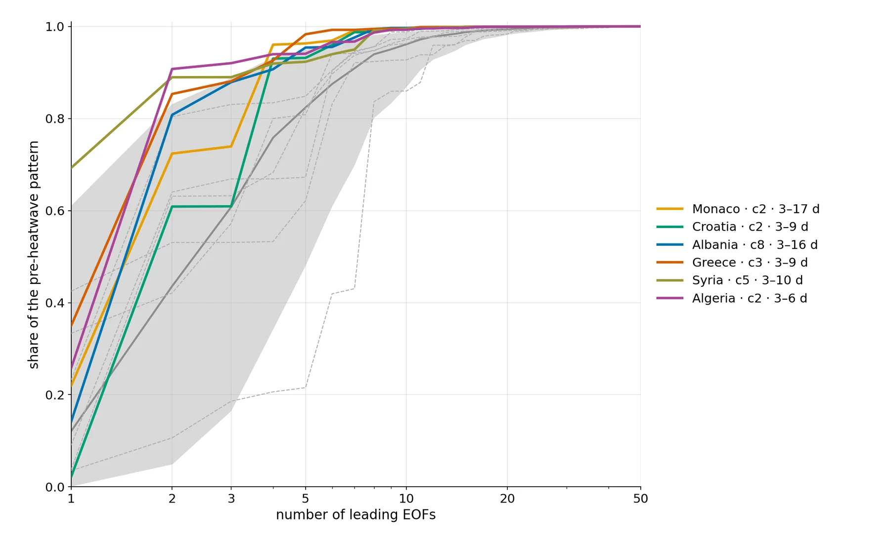
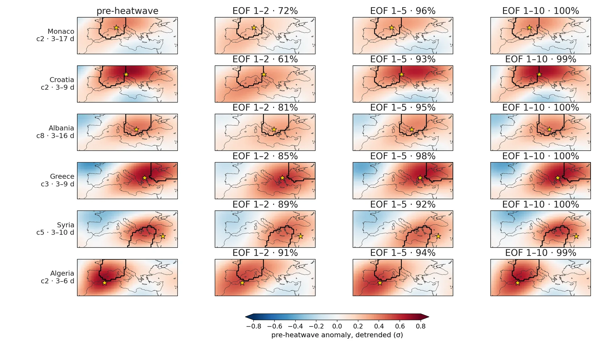

EOFs vs clusters
Rotated EOFs, the clusters and the pre-heatwave patterns (Z500).
Unrotated EOFs and the varimax rotation
Local Z500: leading unrotated EOFs 1–6 (detrended, train 1950–2010)

About this figure
Correlation (r) of each grid point with the scores of the six leading S-mode EOFs of detrended local Z500 anomalies, computed on the CRO's sample days (1 Apr–28 Aug of the train years); panel titles give each EOF's share of variance, thin grey lines are the k = 8 KMeans cluster boundaries and black dots the 12 sites. The EOFs are domain-wide patterns (EOF1 a west–east dipole, EOF2 a monopole over the central Mediterranean, EOF3 a tripole), and each cluster's series correlates only |r| = 0.53–0.77 with its best-matching unrotated EOF among EOFs 1–20.
eof/figuras/L_z500_1_eof.png
Local Z500: how a varimax rotation turns EOF1–2 into two regional modes

About this figure
A teaching example on real data: only the two leading EOFs of detrended local Z500 are rotated (N = 2) so that the rotation can be drawn in a plane, so these two rotated modes are not the RPC1–2 of the N = 8 rotation. Left are the EOF1 and EOF2 correlation maps; in the centre each grid point is a dot placed by its r with EOF1 and EOF2, with grey axes for the unrotated EOFs and coloured arrows for the rotated axes (a point's projection on an arrow is its rotated correlation), dots coloured by the rotated mode they load on most, and yellow circles for the grid points nearest Murcia and Greece. Right are the two rotated modes, RPC1 centred on the eastern and RPC2 on the western Mediterranean, which together keep the variance of EOF1 and EOF2 (shares in the panel titles).
eof/figuras/varimax_explicacion_L_z500.png
Rotated EOFs vs KMeans clusters
Local Z500: varimax-rotated EOFs (N = 8) and best-matching KMeans clusters

About this figure
Correlation maps (r) of the eight varimax-rotated EOFs (N = k = 8) of detrended local Z500, ordered by variance share (panel titles); each KMeans cluster is outlined in thick black and numbered on the rotated mode its detrended series correlates best with, thin grey lines are all cluster boundaries and dots the sites. Seven modes are regional centres of action holding one or two clusters, and every cluster correlates r = 0.76–0.95 with its best rotated mode. Clusters 2 (northern Italy and the Alps) and 8 (Balkans) both fall in RPC3 (they separate with N = 10), and RPC8 (3 % of the variance) holds no cluster.
eof/figuras/L_z500_2_reof.png
Local Z500: correlation of cluster series with rotated and unrotated modes

About this figure
Each cell is the time correlation, over the train sample days, between a KMeans cluster series (c1–c8, detrended, the series the CRO sees) and the scores of a rotated mode RPC1–8 (left) or an unrotated EOF1–10 (right); values are printed where |r| ≥ 0.5. Site names on the right mark the cluster that is the strongest CRO-selected Z500 cluster of a site with a signal in both train and test. Each cluster correlates r = 0.76–0.95 with one rotated mode, but at most |r| = 0.53–0.77 with any unrotated EOF.
eof/figuras/L_z500_3_match.png
Rotated modes and the CRO-selected precursors
Local Z500: rotated modes linked to the CRO-selected precursor clusters

About this figure
The eight rotated modes of local Z500 (N = 8, as in the rotated-EOF maps above), linked to the CRO selection: a yellow star marks a site where a cluster of that mode, selected in at least 2 of the 3 seeds, has a significant pre-heatwave plain-anomaly contrast (year-permutation p < 0.05 in train 1950–2010 and in test 2011–2021, same sign); its label gives the site, the cluster when the mode holds two, and the lag window. All qualifying clusters are starred, not only each site's strongest one, so Albania, Greece and Algeria appear in two modes. Faded modes (RPC2, RPC4, RPC5, RPC8, their clusters in grey) have no such cluster at any site; the active ones are RPC3 (c2, c8), RPC1 (c5), RPC7 (c3) and RPC6 (c4).
eof/figuras/L_z500_2b_reof_selected.png
Local Z500: pre-heatwave anomaly of each rotated mode at the 12 sites (train)

About this figure
Each cell is the detrended pre-heatwave contrast of one rotated mode (RPC1–8, column labels give its clusters) at one site, in units of the mode-score standard deviation (σ): the score averaged over the lag window of the site's strongest CRO-selected Z500 cluster (row label; selected in ≥ 2 of 3 seeds, smallest train p), mean on train heatwave days minus mean on all train days. A black box marks the rotated mode best correlated with that cluster, a dot marks year-permutation p < 0.05 in train and in test (2011–2021) with the same sign, and grey row labels mean that cluster has no train+test signal. At 5 of the 6 sites with a signal the matched mode has the largest absolute anomaly (RPC3 for Monaco, Croatia and Albania, RPC7 for Greece, RPC1 for Syria); at Algeria it ranks 4th.
eof/figuras/L_z500_5_rpc_sites.png
How many EOFs the pre-heatwave pattern needs
Local Z500: share of the pre-heatwave pattern captured by the leading EOFs

About this figure
Share of the (cos-lat weighted) detrended pre-heatwave Z500 map captured by the N leading unrotated EOFs, on a logarithmic x axis; the map is the heatwave-day minus all-day mean in train 1950–2010, averaged over the lag window of each site's strongest CRO-selected cluster. Coloured lines are the six sites with a signal in both train and test (legend: cluster and lag window) and dashed grey lines the other six sites; the grey band and grey line are the 5–95 % range and median of a 2000-permutation year-shuffling null, taken as the median over sites. At the six sites 5 EOFs capture 92–98 % of the pattern and 10 EOFs at least 99 %, above the null at 10 EOFs (p ≤ 0.005).
eof/figuras/L_z500_4_projection.png
Local Z500: pre-heatwave maps at 6 sites rebuilt from EOF 1–2, 1–5 and 1–10

About this figure
Each row is one of the six sites with a train+test signal: the left map is the detrended pre-heatwave Z500 contrast (σ; heatwave-day minus all-day mean, train 1950–2010) over the lag window of the site's strongest CRO-selected cluster (black outline = that cluster, yellow star = site), and the next maps rebuild it from EOF 1–2, 1–5 and 1–10, with the captured share in their titles. EOF 1–2 capture 61–91 % and EOF 1–5 92–98 %; no single unrotated EOF describes the pattern, and 2–5 have to be combined to rebuild the regional ridge.
eof/figuras/L_z500_6_reconstruction.png